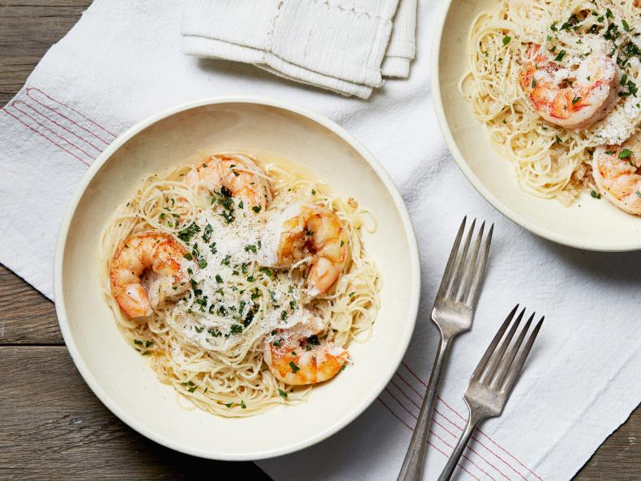

Curried sausages
recipe
Retro is back, baby! At last, I can make my shameful curried sausage love public.
Why we love this curried sausages recipe
As a meal, curried sausages has enough kick to know you’re alive, but it’s not too spicy for
kids, making it an ideal midweek dinner for families — and it’s pretty easy on the budget too!
Whether it’s served with creamy mash or fluffy white rice, it’s bound to please everyone at the table.
Key ingredients that bring flavour to curried sausages
Curried sausages can be served with rice (as a nod to curry) or mashed potato (hello bangers)! My guilty pleasure, however, is serving it with the sausage already cut up, in a bowl, with thick slices of buttered bread, on the couch!
Nutrition per serving